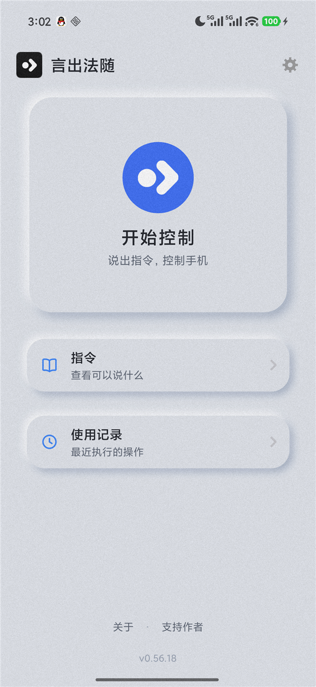
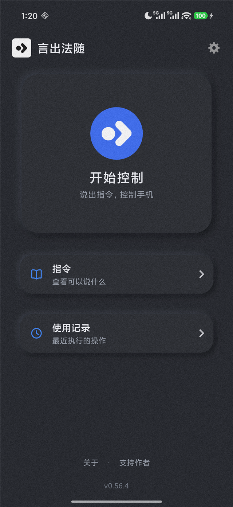
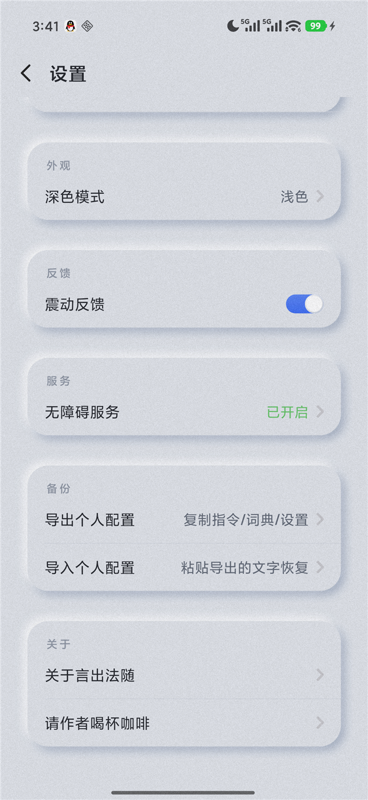

安卓系统级中文语音控制
全离线 · 零数据上传 · 中文原生
往 下 滑 ， 听 完 这 个 故 事
解锁、打字、滑动、点按——手机的每一个动作，都默认你有一双灵巧的手。
对肢体障碍用户来说，这不是「不方便」，是「无法使用」。
全球超过十亿人正与某种形式的残疾共同生活。他们中的绝大多数，用的是安卓。
iOS 13 起内置的 Voice Control——点按、滑动、打字、编号与网格选择， 把系统级语音控制做成了标杆，甚至支持中文。设备端运行，不联网也能用。
但它只属于苹果：硬件昂贵、生态封闭。数亿安卓用户，只能看着。
来源：Apple Support · Voice Control
谷歌给安卓交出的答案，官方支持 7 种语言：英语、西班牙语、德语、意大利语、法语，
以及仅部分支持的葡萄牙语和日语——没有中文。
它还依赖 Google 服务框架，国内环境本就无法使用。
全球最多的安卓人群，说着世界上最被广泛使用的语言，却不在支持列表里。
来源：Google Support · Voice Access 命令
MIUI「设置 → 无障碍 → 肢体」里的语音控制——屏幕数字标签加语音指令，
是国内厂商为肢体障碍用户迈出的难得一步。
但长期缺乏更新与维护，已难以适配今天复杂的应用生态。
来源：小米官方无障碍功能文档
硬件在进步，应用在爆炸，这块空白停在原地。
直到一个 22 岁的 SMA 患者决定：自己来填。
安卓系统级中文语音控制。四个承诺，每一个都当真：
麦克风拾音，回声消除 + 噪声抑制打底。
SenseVoice 在手机上整句解码——全程零上传。
同音字纠正、个人词典，把听岔捞回来。
无障碍手势直达系统层，即刻生效。
说出屏幕上的文字，直接点按对应元素——微信等复杂应用同样支持。
可交互元素自动编号，呼叫数字精准触发。看到的编号，就是点到的编号。
3×4 网格覆盖全屏，最多 5 级缩放，无文字界面也能像素级点选。
任意输入框说「听写」，下一句话停顿即填入——聊天、备忘录全都能用。
「把 X 替换成 Y」——说错了改稿不用动手，拼音模糊照样命中。
人名、地名、专业词优先识别——软件会越来越懂你的说话方式。
上下左右滑动、短距精准摇移、双指缩放——看图刷视频不用手。
锁屏、通知中心、控制中心、最近任务、截屏——系统层直接下达。
媒体音量 80% 硬顶 + 命令冷却 + 熔断——误识别永远闹不出事故。
用自己的话给任何动作起名，语音录入、立即生效。
1~10 档无级调节——为小声说话、口齿不清的使用者深度适配。
指令、词典与偏好一键导出，粘贴导入——换机一份文字全带走。
不常驻麦克风。说「退出」、锁屏或到时未续期，立即归还。
每 5 分钟续期、单次最长 25 分钟、到期前 20 秒预警——不是限制，是保险。
异常密集执行自动中止；媒体音量 80% 硬顶——误识别闹不出事故。
与系统同色的凹凸表面、柔和的双向光影——界面本身就是一次触觉提醒。



安装包约 285MB——完整的离线中文识别模型直接内置。
Android 7.0+ · Apache-2.0 开源 · 永久免费
装好后按引导开启无障碍服务即可开始使用 · 详细更新见 CHANGELOG
无障碍设计的终极目标，
是让「无障碍」失去存在的必要。
言出，法随。愿每一次开口，都有回应。
黄信豪 Hugo · 言出法随作者 · 22 岁 · SMA 患者